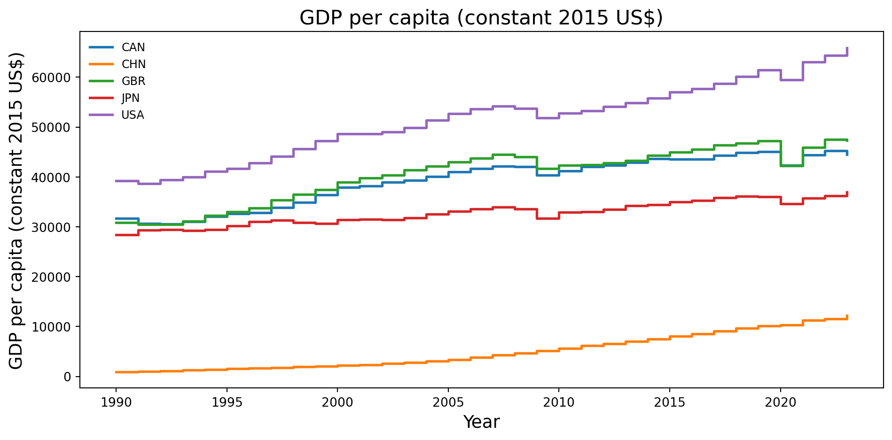
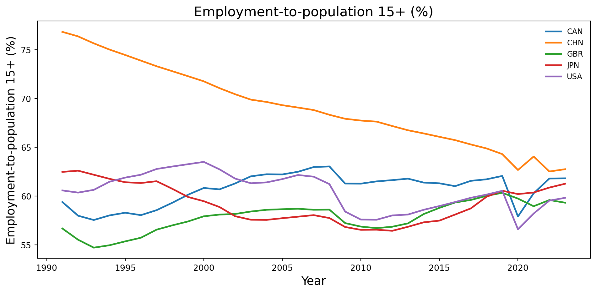
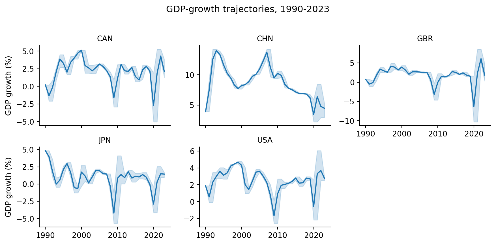

Country Name GDP_count GDP_mean GDP_std GDP_min \
0 Canada 34 39357.078405 4856.836357 30563.378820
1 China 34 5073.229508 3583.630683 905.032457
2 Japan 34 32770.738504 2371.821778 28422.213120
3 United Kingdom 34 40583.327987 5456.617589 30441.481350
4 United States 34 51521.551093 7640.364126 38637.839810
GDP_max Employment_count Employment_mean Employment_std \
0 45227.14474 33 60.712303 1.629455
1 12175.19611 33 69.123242 4.132756
2 36990.33011 33 59.238939 1.957756
3 47551.22966 33 57.831939 1.511241
4 65875.17788 33 60.468424 1.872493
Employment_min Employment_max GDP_Growth_count GDP_Growth_mean \
0 57.548 63.041 34 2.135410
1 62.523 76.840 34 8.797740
2 56.440 62.608 34 0.963596
3 54.713 60.335 34 1.859416
4 56.598 63.506 34 2.491121
GDP_Growth_std GDP_Growth_min GDP_Growth_max
0 2.185206 -5.038233 5.286957
1 2.924949 2.238638 14.230861
2 2.050458 -5.693236 4.840929
3 2.990588 -10.296919 8.575951
4 1.757601 -2.576500 6.055053 Workforce vs. Output: Tracing Income Convergence Paths Across Five Economies
Introduction
Economic development hinges on two broad engines of per-capita income growth: expanding labor inputs and boosting productivity. We would like to ask: How do countries at different stages of development deploy labor-force participation versus productivity improvements to drive real income gains? Examining five economies—Canada, China, the United Kingdom, Japan, and the United States—from 1990 to 2023, we find three distinct patterns. First, high-income North American and UK economies achieve substantial living-standards with only modest changes in employment rates. Second, China’s catch-up has depended first on rapidly mobilizing labor and later on transitioning toward productivity‐led growth. Third, Japan now struggles with stagnation in both dimensions. Strong negative correlations between GDP per capita and both employment and GDP growth suggest that wealthier countries derive less of their income gains from simply expanding the workforce or overall growth rates. Meanwhile, the strong positive association between employment and growth indicates that increases in labor participation tend to coincide with faster output expansion. Together these patterns trace a development path that moves from relying on labor quantity to elevating productivity per worker.
Data Description
Introduction of Dataset and Context
The study draws on a World-Bank panel that tracks four economies—Canada, the United States, China and Japan—from 1990 through 2023. Each country-year record combines three harmonised indicators downloaded on 15 April 2025 from the World Development Indicators: real GDP per capita in constant-2015 dollars, its annual growth rate and the employment-to-population ratio for adults aged 15 plus.
Data cleaning, merging, and preprocessing
Summary of Key Variables
Data Analysis
Income levels and their growth paths Income levels and their growth paths

Real income in the United States rises from roughly $39 000 in 1990 to about $66 000 in 2023, widening its lead over all other cases. Canada mirrors the American path but remains $7 000–$10 000 lower throughout. The United Kingdom follows a similar trajectory, climbing from around $31 000 to nearly $47 000 over this period, tracking North America closely but persistently lagging by a few thousand dollars, with a pronounced dip around the 2009 global financial crisis and a smaller setback in 2020. China, starting from just over $1 000, multiplies its income almost ten-fold, yet still reaches only about $12 000 by the end of the sample. Japan’s income climbs during the 1990s but plateaus at approximately $36 000 after 2010. Corresponding growth-rate figures reveal that China’s rapid expansion, once firmly in double digits, decelerates to mid-single-digit territory in the 2010s. Japan’s growth oscillates around zero, reflecting its long struggle with deflation and demographic ageing. The United States, Canada, and the UK exhibit more moderate booms and busts—rarely exceeding 4 percent on the upside or falling much below 2 percent, except in the global crises of 2009 and 2020, which strike all five economies simultaneously.
Evolution of labor-market participation

The employment-to-population chart reveals markedly different trajectories across these economies. China begins the 1990s with an exceptionally high participation rate of about 77 percent, but this figure declines steadily to the mid-60s by 2023. Japan starts near 63 percent, drifts downward for a decade, then partially recovers but never regains its early-1990s peak. The United Kingdom’s rate is lower, around 56 percent in 1990, dips slightly in the mid-1990s, then climbs gradually into the high-50s by the mid-2000s, before falling back below 56 percent during the 2009 recession and then recovering toward 60 percent by 2020; a pandemic-induced drop in 2020 is followed by a rebound to roughly 59 percent by 2023. Canada and the United States instead fluctuate within a relatively narrow band between 58 and 64 percent. Both North American economies share two conspicuous dips, which are the Great Recession in 2008 and the COVID-19 shock in 2020, yet by 2023 they have largely returned to pre-pandemic levels of around 62–63 percent.
GDP Growth of Countries

Each panel shows annual real-GDP growth for one country. China starts with exceptional double-digit gains, slows steadily after 2010, and dips sharply in 2020. Canada, the United Kingdom, and the United States share the usual rich-economy cycle: steady 2–4 percent growth interrupted by recessions in 2009 and 2020, with quick rebounds. In the UK’s case, growth hovers around 2–3 percent through the 1990s and 2000s, dips slightly below zero in the global financial crisis, recovers modestly before the 2020 shock, then snaps back above 5 percent in 2021. Japan hovers near zero for most of the period, illustrating prolonged stagnation, and sees the same two global downturns. The shaded bands mark wider volatility during those recessions and during China’s early boom, but remain narrow in normal years，signaling more predictable growth paths then.
Indicators’ Correlation
| GDP | Employment | GDP Growth | |
|---|---|---|---|
| GDP | 1.0 | -0.72 | -0.65 |
| Employment | -0.72 | 1.0 | 0.75 |
| GDP Growth | -0.65 | 0.75 | 1.0 |
The correlation matrix reveals a clear trade-off between output levels and both labor participation and growth momentum. GDP per capita is strongly negatively correlated with the employment-to-population ratio (–0.72), indicating that higher-income economies tend to rely more on productivity gains than on expanding their workforce. Likewise, GDP per capita exhibits a sizeable negative relationship with GDP growth (–0.65), reflecting the convergence pattern whereby lower-income countries grow faster as they catch up. By contrast, employment share and GDP growth move strongly in tandem (+0.75), suggesting that when economies do expand rapidly, they often do so by mobilizing additional labor. Together, these coefficients underscore how the balance between labor input and productivity shifts as countries develop.
Result and discussion
Result
Between 1990 and 2023, per-capita incomes diverged sharply across the five economies. The United States rose from $39 000 to $66 000, Canada from $32 000 to $55 000, and the United Kingdom from $31 000 to $47 000—each maintaining a stable employment-to-population rate in the high-50s to low-60s. China’s income surged nearly ten-fold (from $1 000 to $12 000) even as its participation rate fell from 77 percent to the mid-60s. Japan climbed to $36 000 by 2010 but then stagnated alongside a roughly constant 56 percent participation rate. Annual GDP growth showed China’s double-digit booms tapering to mid-single digits after 2010 and a sharp 2020 contraction; advanced economies exhibited 2–4 percent “business-as-usual” growth with synchronized dips in 2009 and 2020. The correlation matrix quantifies these patterns: GDP per capita correlates –0.72 with employment and –0.65 with growth, while employment and growth correlate +0.75.
Discussion
These patterns highlight three development paths. Advanced economies (U.S., Canada, U.K.) raise living standards mostly through productivity gains rather than by expanding their workforce. China’s catch-up unfolded in two stages: first mobilizing vast numbers of workers, then shifting toward higher output per worker. Japan now faces stagnation in both income growth and labor participation, held back by an ageing population and years of low demand. However, national averages mask regional and sectoral differences, and strong correlations do not prove causation—factors like investment, technology adoption, and policy changes also play crucial roles. Major events (China’s WTO entry, Japan’s “lost decades,” the pandemic) further complicate the simple trend picture.
Conclusion
Achieving and sustaining higher living standards requires a clear shift in how economies grow. Early on, many countries rely on bringing more workers into the labor force. Over time, however, simply adding heads is no longer enough—boosting what each worker produces becomes the main driver of income gains. Our findings show that advanced economies have already made this transition, but they now confront challenges from ageing populations and slower productivity growth. Emerging economies, such as China, are in the middle of this journey: moving from labor-intensive expansion toward a greater emphasis on skills, innovation, and capital investment.